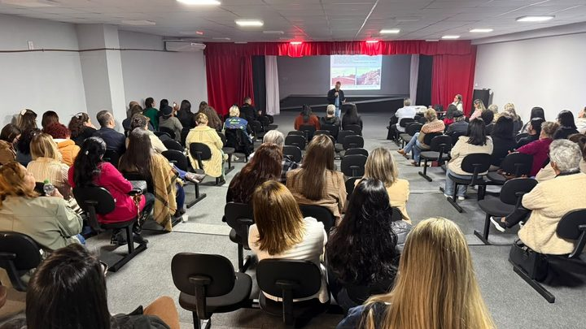
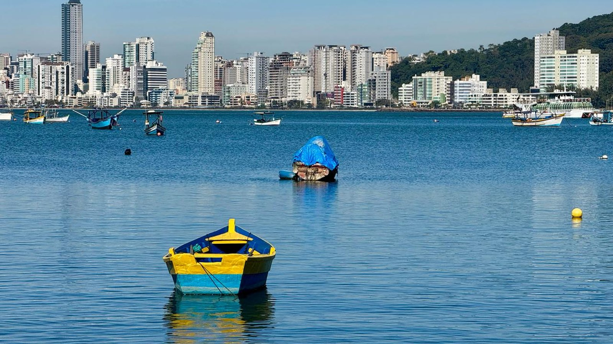
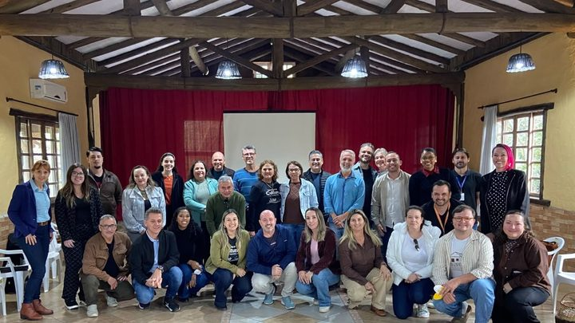

Itapema · CulturaItapema vai sediar a maior festa de cultura açoriana do Brasil em novembro
A matéria de agosto que deixou as seis perguntas que esta aqui volta a cobrar.
A Prefeitura divulgou o lugar e confirmou a data da 32ª Festa da Cultura Açoriana de Santa Catarina, o AÇOR: Orla do Centro, nos dias 20, 21 e 22 de novembro, que caem numa sexta, num sábado e num domingo. É a primeira vez que Itapema sedia a festa. Em 11 de agosto nós listamos seis coisas que a Prefeitura ainda não tinha dito sobre o evento. A Prefeitura respondeu uma delas em 24 de setembro, 44 dias depois: o local. Faltam 55 dias para o primeiro dia de festa e a programação segue sem data para ser publicada. As contas de dias são nossas.
Em 30 segundos · Modo de Leitura, formato original Santa Informa
A maior festa de cultura açoriana do estado vem para Itapema.
É a 32ª Festa da Cultura Açoriana de Santa Catarina.
O apelido dela é AÇOR.
A Prefeitura já disse onde vai ser.
Vai ser na Orla do Centro.
As datas são 20, 21 e 22 de novembro.
Sexta, sábado e domingo, conta nossa.
É a primeira vez que a festa acontece na cidade.
Em 2025 a sede foi Barra Velha.
A festa muda de cidade a cada edição.
Quem organiza é o Núcleo de Estudos Açorianos da UFSC.
Itapema ia como convidada havia oito anos.
Em 11 de agosto nós escrevemos sobre a escolha da cidade.
Naquele dia listamos seis perguntas sem resposta.
Uma delas era onde a festa ia ser.
Essa saiu em 24 de setembro, 44 dias depois.
As outras cinco continuam abertas.
A maior delas é a programação.
A Prefeitura diz que ela está sendo preparada.
Faltam 55 dias para o dia 20, conta nossa.
A preparação começou pela escola.
Na sexta, 25 de setembro, três turmas visitaram o Espaço Cultural Nelson Santos.
São turmas do 5º ano da ECIM Maria Linhares de Souza.
Uma foi de manhã e duas à tarde.
O espaço já tinha recebido a Educação Infantil.
E segue aberto para outras escolas da rede.
Em 2027 a festa vai para Bombinhas.
São duas edições seguidas na Costa Esmeralda.
TurismoPublicada em Redação Santa Informa

A 32ª Festa da Cultura Açoriana de Santa Catarina, o AÇOR, vai acontecer na Orla do Centro de Itapema nos dias 20, 21 e 22 de novembro, uma sexta, um sábado e um domingo. É a primeira vez que o município recebe a festa. A Prefeitura divulgou o endereço em 24 de setembro, 44 dias depois de nós registrarmos que ele ainda não tinha sido informado. Das seis perguntas que deixamos em aberto naquele dia, essa é a única respondida até agora. As contas são nossas.
Quando contamos, em 11 de agosto, que Itapema seria a sede, deixamos escrito no box de pendências seis coisas que a Prefeitura ainda não tinha dito: a programação, o local, quantos municípios trazem delegação, se haveria estrutura de apoio para o visitante de fora, quanto custa e de onde vem o dinheiro. Até agora, uma foi respondida, a do local, em 24 de setembro. A própria nota da Prefeitura diz que a programação "está sendo preparada" e sairá pelos canais oficiais, sem prazo. Faltam 55 dias para o primeiro dia de festa. A contagem é nossa.
A preparação continua pelo lado do ensino. Na sexta, 25 de setembro, três turmas do 5º ano da ECIM Maria Linhares de Souza visitaram o Espaço Cultural Nelson Santos para ver história, costumes e tradições açorianas presentes na cidade. Uma turma foi de manhã e duas à tarde. O espaço já tinha recebido turmas da Educação Infantil e segue aberto para outras escolas da rede. É a continuação da formação de professores e especialistas que a Secretaria de Educação fez em parceria com o Núcleo de Estudos Açorianos da UFSC, e que foi o assunto da nossa matéria de agosto.
O AÇOR não tem sede fixa. Ele é realizado pelo NEA da UFSC e passa por uma cidade catarinense a cada edição, reunindo grupos e comunidades que mantêm viva a herança açoriana. Em 2025 a sede foi Barra Velha. Agora é Itapema, que vinha participando como convidada havia oito anos. A secretária de Cultura, Ana Maria Vedana, ligou a escolha ao Canto da Praia e às famílias que mantêm os costumes da pesca. E a festa não vai longe depois daqui: em 16 de setembro o Conselho Deliberativo do NEA escolheu Bombinhas para a 33ª edição, em 2027, o que põe duas edições seguidas na Costa Esmeralda. O lugar escolhido em Itapema já tem rotina de evento: a Orla do Centro é o mesmo trecho que a Prefeitura já fecha para eventos de fim de semana, com mudança de trânsito e de estacionamento avisada na véspera.
O resumo de 30 segundos está no topo e a versão completa é o texto acima. Aqui ficam as três leituras da casa sobre o mesmo assunto.
Clara, a otimista
Saber o lugar muda tudo para quem trabalha na cidade. Orla do Centro quer dizer pé na areia, restaurante perto, pousada perto e gente passando. Pequeno comerciante daquele trecho já pode começar a pensar em estoque, em horário e em quem vai chamar para ajudar no fim de semana.
E a data é boa. Vinte de novembro cai numa sexta, o que dá três dias cheios, e novembro é justamente o mês em que a cidade está respirando antes da temporada. Uma festa estadual nessa janela põe visitante de outras cidades catarinenses aqui quando a rede hoteleira ainda tem lugar e preço. Se a programação sair a tempo, é uma ponte inteira até o verão.
Seu Prudêncio, o criterioso
Merece atenção o calendário da informação. A cidade sabe desde agosto que vai sediar, e a 55 dias do evento ainda não há programação publicada. Pousada, restaurante e transporte trabalham com antecedência maior que essa. Uma sugestão útil, e que não custa nada: publicar um rascunho da grade, mesmo sujeito a mudança, para que o setor possa se organizar.
Vale acompanhar também o trecho exato da orla e o plano de trânsito. Quem mora naquelas ruas já conhece o aviso de última hora, e três dias de festa pedem mais do que um comunicado na véspera. Some a isso o silêncio sobre custo e origem do recurso: não é acusação nenhuma, é informação que costuma sair junto com o anúncio e aqui não saiu.
Dito isso, o caminho escolhido está certo no fundamental. Começar pela formação de professor e pela visita de aluno ao espaço cultural, antes de contratar palco, é ordem de prioridade rara e barata. Quando a festa passar, o que o aluno aprendeu sobre a origem da própria cidade continua aqui. Isso merece o registro.
Caco, o sarcástico
Em agosto a gente perguntou seis coisas sobre a festa. Quarenta e seis dias depois veio a resposta de uma. Nesse ritmo, o custo do evento a gente descobre no Natal e a origem do recurso na Páscoa.
Descobrimos que vai ser na Orla do Centro, que é o lugar onde acontece praticamente tudo nesta cidade. Foi quase um spoiler.
Mas vou reclamar de quê. A festa açoriana mais antiga do estado escolheu a nossa orla, a criançada já está aprendendo de onde veio o nome das coisas daqui, e em novembro vai ter boi de mamão onde normalmente tem fila de carro. Falta programação, mas é progresso.
Fontes: o local na Orla do Centro, as datas de 20, 21 e 22 de novembro, a informação de que é a primeira vez que o evento acontece em Itapema, a realização pelo Núcleo de Estudos Açorianos da UFSC, o rodízio de cidades, a sede de 2025 em Barra Velha, a fala da secretária de Cultura Ana Maria Vedana sobre o Canto da Praia e a frase de que a programação "está sendo preparada" estão na nota Itapema recebe a 32ª Festa da Cultura Açoriana em novembro, da Prefeitura de Itapema, publicada em 24 de setembro de 2026, que abrimos e lemos por inteiro. A visita de 25 de setembro, as três turmas do 5º ano da ECIM Maria Linhares de Souza, o Espaço Cultural Nelson Santos, a divisão entre uma turma de manhã e duas à tarde, as turmas de Educação Infantil já recebidas, a abertura para outras escolas da rede e a parceria com o NEA da UFSC estão em Preparação para o AÇOR 2026 envolve alunos da Rede Municipal de Itapema, da mesma Prefeitura, também aberta e lida por inteiro. As seis pendências que esta matéria cobra, os oito anos de participação como convidada e a formação de professores de agosto foram publicados por nós em Itapema vai sediar a maior festa de cultura açoriana do Brasil em novembro, de 11 de agosto de 2026. A escolha de Bombinhas para a 33ª edição, confirmada em 16 de setembro pelo Conselho Deliberativo do NEA, foi publicada por nós em Bombinhas vai sediar o Açor de 2027, de 18 de setembro de 2026. O histórico de fechamento de trechos da orla do Centro para eventos está em Três eventos fecham trechos da orla do Centro de Itapema neste fim de semana, nosso. As contas de 44 dias, de 55 dias, de seis perguntas com uma respondida e dos dias da semana em que caem 20, 21 e 22 de novembro são nossas.

Itapema · CulturaA matéria de agosto que deixou as seis perguntas que esta aqui volta a cobrar.
 Itapema · Trânsito
Itapema · TrânsitoComo a cidade costuma mexer no trânsito quando a Orla do Centro recebe evento.

Bombinhas · CulturaDepois de Itapema em novembro, a 33ª edição atravessa a península.